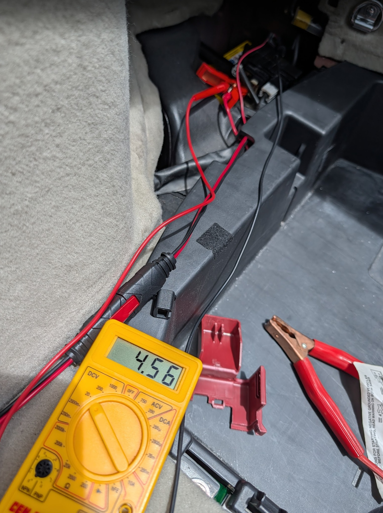

The Gen 2 Prius has two batteries: the big hybrid battery pack (under the rear seats) and a small 12V auxiliary battery hidden under the cargo floor in the back. They do completely different jobs.
The 12V battery powers all the low-voltage systems: the ECU, the power door locks, the dash lights, the Ready button circuit, and the relay that wakes up the hybrid system. Without it, the car is completely dead. It won't turn on, the power locks won't work, and nothing on the dash will respond. The hybrid battery cannot substitute for it, and it won't charge the 12V either unless the car is in Ready mode. The 12V charges through a DC-DC converter that only runs when the hybrid system is active. Park the car for weeks without driving and the 12V will drain on its own, no matter how healthy the hybrid pack is.
This is not the hybrid battery. The 12V battery is a small, conventional lead-acid battery, similar to what a motorcycle uses. It's about the size of a shoebox and sits in a tray under the cargo floor. Many people assume the Prius doesn't have one. It does. And when it dies, the car is completely non-functional.
Symptoms of a Failing 12V Battery
Car won't turn on at all. Pressing the Power/Ready button does nothing.
No dash lights, no chime, no response from any controls
Power door locks unresponsive (remote key fob doesn't unlock the car)
Car cranks or tries to start but immediately shuts off
Intermittent warning lights on startup that go away once driving
Dome light noticeably dimmer than usual (visible early sign of low voltage)
Rear hatch button unresponsive — hatch won't open electronically
Returned from a trip to find the car completely dead

4.56V after 12+ hours on a Noco Genius 1 charger. The battery had sat discharged for 2 years and was completely dead. A healthy battery holds 12.6V+ at rest. Anything under ~11V won't recover.
Why It Dies Early in Florida
Heat kills lead-acid batteries faster than anything else. A 12V battery that lasts 5+ years in a northern climate may only last 2–3 years in Florida, Texas, Arizona, or anywhere that regularly sees high temperatures sitting in a hot garage or parking lot.
The other Florida-specific failure mode: leaving the car parked for 3+ weeks. The Prius has enough parasitic draw from the ECU and alarm system that a 12V battery in marginal condition will be fully discharged by the time you return from a long trip. Even a healthy battery can be damaged by a full deep discharge.
After three replacements over 17 years of South Florida ownership ($250–$300 each at a shop), the pattern is clear: hot climate means treating this as a 3-year replacement item, not a 5-year one.
Replacement Options
Option
Cost
Notes
DIY: S46B24R (JIS spec)
$170–$200+
The Gen 2 Prius uses a S46B24R battery (JIS standard). This is cross-referenced as "Group 51R" by US retailers, but the terminal posts are smaller JIS "pencil post" style. A standard BCI Group 51R from an auto parts store may not fit the terminals correctly. Look specifically for S46B24R or confirm the terminal size before buying. EverStart Platinum S46B24R (Walmart) is commonly used. AutoZone, O'Reilly, and Advance Auto typically carry cross-referenced options.
Toyota dealer replacement
$350+
Toyota installs an S46B24R AGM battery. Dealer cost is mostly labor; the job takes under 30 minutes. At this price, DIY is almost always the better choice.
Independent shop
$300+
Cheaper than dealer. Verify they use the correct battery size. Some shops default to whatever they have in stock and may install an incorrect group size that doesn't fit the tray securely.
Battery Location and Replacement
If the hatch won't open because the battery is completely dead, you need to release it manually before you can access the battery. Fold the rear seat backs forward from inside the car, then climb into the cargo area. Remove the cargo floor cover and carpet, locate the hatch latch mechanism at the back of the cargo area, and pull the manual release tab with your finger or a hook. The hatch should pop free — push it up from inside.
Open the cargo area (rear hatch). Lift the cargo floor panel (it hinges up or removes entirely depending on trim).
The battery tray is on the right side of the cargo area. You'll see a small rectangular battery in a plastic tray with a vent tube attached.
Disconnect the negative terminal first (black, −), then the positive (red, +). This order matters. Reverse it on reinstall: positive first, then negative.
Remove the hold-down bracket, typically one bolt at the base of the tray.
Lift the old battery out. It weighs about 26 lbs (12 kg).
Set the new battery in the tray. Verify the terminals line up. Standing at the rear of the car looking in, the positive terminal should be on your left (toward the front of the car) and negative on your right. A standard 51 (non-reverse) has the terminals flipped and won't fit correctly.
Reinstall the hold-down bracket.
Connect positive terminal first, then negative.
Reattach the vent tube to the battery vent port. This tube routes battery gases outside the car. Don't skip it.
Start the car. It should come on normally. Any stored fault codes from the dead battery may trigger warning lights on first startup. They typically clear on their own after a drive cycle or two.
After replacement, the clock, radio presets, and other stored settings will reset. Navigation history, Bluetooth pairings, and any custom audio settings will be cleared. The ECU may also need a few drive cycles to relearn fuel trims and idle settings. This is normal. The car will run slightly rough or idle oddly for the first day or two, then settle.
Disconnecting the 12V Battery to Reset Error Codes
Disconnecting the 12V battery is a common method for resetting stored fault codes; it cuts power to the ECU and forces a full reset. This works, but there are a few things worth knowing:
10 seconds is the commonly cited minimum, but leaving it disconnected for 30–60 seconds gives the capacitors in the ECU time to fully drain and ensures a complete reset.
Not all codes clear this way. Some fault codes, especially hybrid system codes (P3xxx, P0Axxx), are stored in non-volatile memory and require a scan tool to fully clear even after a battery reset. The check engine light may come back.
OBD2 readiness monitors reset. After a battery disconnect, the ECU's emissions monitoring cycles are cleared. Your car may fail a smog/emissions inspection for a few days until those monitors complete, so plan accordingly.
A Bluetooth OBD2 adapter and Torque is a better long-term solution for reading and clearing codes without disconnecting the battery every time. See the Clear Engine Codes guide.
Trick: leave the positive terminal slightly loose for easy access. If you're frequently disconnecting to clear codes, it gets tedious. One workaround is to leave the positive terminal connector not fully seated, just enough to make contact but easy to pull off by hand. This is not a permanent or recommended approach (a loose terminal can cause intermittent issues and is a fire risk if it arcs), but it's a real thing owners do when dealing with recurring codes during a diagnostic phase. Once the underlying issue is resolved, seat the terminal properly and tighten it down.
Long-Term Parking Tips
If you're leaving the car parked for more than 2–3 weeks, especially in hot weather:
Disconnect the 12V battery negative terminal before leaving. This eliminates all parasitic draw and is the most reliable way to preserve charge over a long trip.
Use a battery tender / trickle charger if you have access to a power outlet where the car is parked. A 1-amp maintainer connected to the 12V will keep it topped off indefinitely.
A jump pack in the car is useful insurance. A compact lithium jump starter can revive a dead 12V and get you to a parts store without a tow.
A dead 12V battery can damage itself permanently. Lead-acid batteries that are fully discharged and left that way for days begin to sulfate. The plates degrade and the battery loses capacity even after recharging. A battery that's been dead for a month usually needs replacement, not just a recharge.
Notes from the Field
Replaced this battery at least three times over 17 years of South Florida ownership. Each time it died the same way: completely dead car, no response to anything, remote key fob useless. At a shop it ran $250–$300 each time. Prices have since climbed; DIY parts alone now run $190+ at Walmart before tax.
The recurring pattern was coming home from a trip of 3+ weeks to find the car completely dead. South Florida heat + parking lot + a few weeks of parasitic draw = a battery that won't recover. Eventually the fix was disconnecting the negative terminal before any trip over two weeks, or leaving a battery maintainer connected.
The DIY swap is genuinely straightforward. The battery is under the cargo floor, easy to reach, and an S46B24R is available at Walmart (EverStart Platinum) or through cross-reference at most auto parts stores. Just confirm the JIS terminal size before buying. At $190 for parts vs. $300+ at a shop or $350+ at a dealer, the case for doing it yourself is hard to argue with, especially when you know you'll be doing it again in a few years.